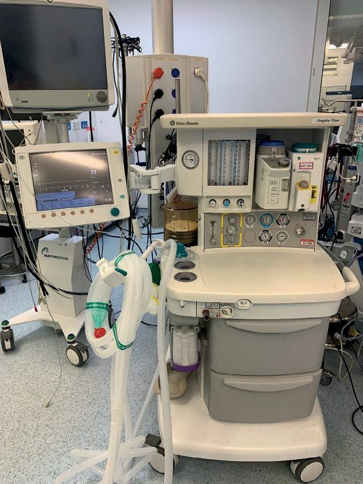
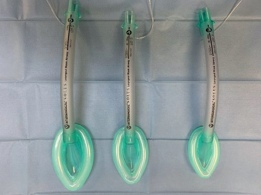
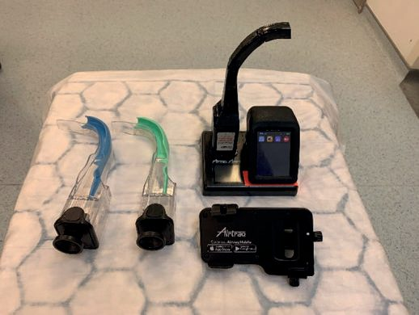
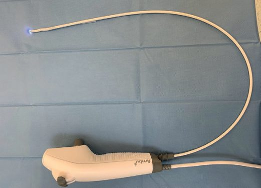

Anesthesia Basics (Surgical Perspective)
Summary
- General anaesthesia is commonly described as the triad of unconsciousness (amnesia), analgesia, and muscle relaxation [1].
- Anaesthetic technique choice (general, regional, or local) depends on the operation and the patient's comorbidity, with regional anaesthesia offering clear advantages when general anaesthesia carries higher morbidity/mortality risk, such as in patients with severe respiratory or cardiovascular disease [1].
- Surgeons need a working knowledge of induction agents, muscle relaxants, airway management, regional/local techniques, and anaesthesia-specific emergencies (malignant hyperthermia, local anaesthetic systemic toxicity) because these directly affect perioperative planning and complication management [2][3].
Definition
- General anaesthesia is a drug-induced state producing loss of consciousness, lack of sensation and muscle relaxation, achieved via inhalational agents (e.g. sevoflurane, most commonly used) or intravenous agents (e.g. propofol, most commonly used) [1][2].
- Regional anaesthesia involves central neuraxial (spinal, epidural) or peripheral nerve/plexus blocks using local anaesthetic drugs; local anaesthesia provides anaesthesia/analgesia via topical application, local infiltration, or nerve blocks [1].
- Minimum alveolar concentration (MAC) is the smallest concentration of inhalational agent at which 50% of patients will not move in response to incision, and is inversely related to lipid solubility/potency (small MAC = more lipid soluble = more potent) [2].

Pathophysiology
- Inhalational agents cause unconsciousness, amnesia and some analgesia; they blunt the hypoxic ventilatory drive, cause some myocardial depression, increase cerebral blood flow and decrease renal blood flow [2].
- Depolarising neuromuscular blockers (suxamethonium/succinylcholine) act by binding nicotinic acetylcholine receptors, opening the cation channel to cause depolarisation and rapid muscle relaxation; non-depolarising agents act by competitive blockade of postsynaptic receptors at the neuromuscular junction [1][2].
- During paralysis, the diaphragm is the last muscle to be paralysed and the first to recover, while neck and facial muscles are the first to be paralysed and the last to recover [2].
- Malignant hyperthermia is a hereditary, life-threatening hypermetabolic disorder caused by a defect in calcium metabolism (a ryanodine receptor defect), in which volatile anaesthetics and/or succinylcholine trigger a rise in myoplasmic calcium causing persistent muscle excitation-contraction; clinical incidence is about 1:12,000 in children and 1:40,000 in adults [2][3].
- Local anaesthetics work by increasing the action potential threshold and preventing sodium influx, producing sensory block greater than motor block; infected (acidotic) tissue is harder to anaesthetise [2].
- Autonomic sympathetic blockade from spinal/epidural anaesthesia produces vasodilation and hypotension, particularly with a block level above T10 [1].
Clinical features
- Malignant hyperthermia: the first sign is a rise in end-tidal CO2, followed by fever, tachycardia, muscle rigidity, acidosis, hyperkalaemia and rhabdomyolysis [2].
- Local anaesthetic systemic toxicity: perioral paraesthesia is the first sign, followed by tremors, seizures, tinnitus and arrhythmias (CNS symptoms precede cardiac symptoms); prilocaine overdose specifically causes methaemoglobinaemia, while bupivacaine overdose causes treatment-resistant ventricular arrhythmia and cardiac arrest [1][2].
- Opioid overdose presents with pinpoint pupils and somnolence; opioids cause profound analgesia, respiratory depression (reduced CO2 drive), no direct cardiac effects, and blunted sympathetic response [2].
- Benzodiazepine effects include anticonvulsant, amnesic and anxiolytic action with respiratory depression but no analgesia [2].
- Postoperative delirium risk is increased by age >65–70 years, cognitive impairment, alcohol abuse history, intraoperative blood loss, undertreated pain, and use of psychotropic medications such as meperidine, diphenhydramine and anticholinergics [4][5].
- Common PACU complications include nausea/vomiting (most common), atelectasis (most common cause of postoperative hypoxaemia), and poor minute ventilation causing hypercarbia [2].
Etiology
- Triggers for malignant hyperthermia include all volatile anaesthetics (halothane, enflurane, isoflurane, sevoflurane, desflurane) and the depolarising muscle relaxant succinylcholine, in a genetically predisposed individual [2][3].
- Suxamethonium should be avoided in patients with severe burns, neurologic injury, neuromuscular disorders, spinal cord injury, massive trauma or acute renal failure, since up-regulation of acetylcholine receptors in these conditions can cause life-threatening hyperkalaemia; it can also convert open-angle to closed-angle glaucoma, and atypical plasma pseudocholinesterase (more common in some Asian populations) causes prolonged paralysis [2].
- Halothane can cause "halothane hepatitis" (fever, eosinophilia, jaundice, raised LFTs) [2].
- Epidural/spinal anaesthesia is contraindicated in hypertrophic cardiomyopathy and cyanotic heart disease because sympathetic denervation decreases afterload and worsens these conditions [2].
- Nondepolarising agents can have prolonged effect in myasthenia gravis [2].
- Local anaesthetic-induced adverse cardiac events are more likely with bupivacaine (most cardiotoxic) than lidocaine, and epinephrine should not be co-administered with local anaesthetic in patients with arrhythmias, unstable angina, uncontrolled hypertension, or in end-arterial territories such as digits/penis/ear [1][2].
Preoperative risk assessment
- Preoperative anaesthetic risk assessment uses the ASA physical status classification (I/P1 healthy; II/P2 mild systemic disease; III/P3 severe systemic disease; IV/P4 severe systemic disease that is a constant threat to life; V/P5 moribund, not expected to survive without the operation; VI/P6 declared brain-dead organ donor), with "E" appended for emergency surgery [2][6].
- Functional capacity is assessed in metabolic equivalents (METs); patients able to achieve 4 METs or more (e.g. climbing two flights of stairs) can typically proceed to surgery without further cardiac workup even with a history of stable coronary disease [3].
- Airway assessment for anticipated difficulty is essential before induction; the ASA difficult airway algorithm specifies that if intubation fails and mask ventilation is inadequate, a supraglottic airway (e.g. laryngeal mask airway) should be inserted next [3].
- NPO (nil-by-mouth) fasting guidelines: 2 hours after clear liquids, 4 hours after breast milk, 6 hours after a light meal or infant formula, 8 hours after a fuller meal [3].
- Cardiac risk stratification for noncardiac surgery: high risk (>5%) includes emergent operations (especially elderly), aortic/peripheral/major vascular surgery (except carotid endarterectomy), and long procedures with large fluid shifts; intermediate risk (<5%) includes carotid endarterectomy, head and neck, intraperitoneal/intrathoracic, orthopaedic, and prostate surgery; low risk (<1%) includes endoscopic, superficial, cataract and breast surgery [2].
- End-tidal CO2 monitoring is used both intraoperatively (to distinguish oesophageal from tracheal intubation, and to detect hypoventilation, air/CO2 embolus, or disconnection) and during cardiopulmonary resuscitation (a value ≥10 mmHg reflects adequate chest compressions; a sudden rise most likely indicates return of spontaneous circulation) [2][3].
Scoring and Severity
The ASA physical status classification (I–VI, with "E" for emergency) is the principal anaesthesia-specific severity/risk classification, with 30-day mortality rising from 0.1% in ASA I to 93.3% in ASA V [2][6][7]. Cardiac risk stratification by surgery type (low/intermediate/high, detailed under Diagnosis) functions as a complementary severity framework for anaesthetic and surgical planning [2].
Treatment and Management
- Induction: propofol has largely replaced thiopentone as the standard intravenous induction agent (smooth induction, haemodynamic stability, suitable for continuous infusion); thiopentone (barbiturate) gives rapid induction with myocardial depression and lowers intracranial pressure (useful in neurosurgery) but risks hypotension; etomidate offers good haemodynamic stability but risks adrenocortical suppression with continuous infusion; ketamine preserves blood pressure and respiratory reflexes with excellent analgesia (useful in field/trauma anaesthesia and children) but causes hallucinations/emergence delirium and catecholamine release [1][2].
- Rapid sequence induction (predetermined IV agent plus rapidly acting muscle relaxant, e.g. succinylcholine or rocuronium, with cricoid pressure) is used for patients at high aspiration risk (recent oral intake, GORD, delayed gastric emptying, pregnancy, bowel obstruction, emergency surgery) [1][2].
- Total intravenous anaesthesia (TIVA, using propofol and remifentanil) is increasingly used for neurosurgery, airway laser surgery, cardiopulmonary bypass and day-case anaesthesia [1].
- Airway management progresses from head tilt/chin lift/jaw thrust and oropharyngeal (Guedel) airways, through supraglottic devices (laryngeal mask airway and second-generation devices such as ProSeal and i-gel), to endotracheal intubation for a secure, protected airway; video laryngoscopes and fibreoptic bronchoscopes assist anticipated difficult intubation [1].
- Muscle relaxant reversal: sugammadex selectively reverses rocuronium and vecuronium; neostigmine and edrophonium reverse non-depolarising blockade by inhibiting acetylcholinesterase (co-administered with glycopyrrolate or atropine to counteract generalised cholinergic excess) [1][2].
- Ventilation modes: volume-controlled ventilation delivers a preset volume regardless of pressure (risking barotrauma in laparoscopic Trendelenburg positioning, obesity, or lung disease); pressure-controlled ventilation delivers flow to a preset pressure with variable resulting tidal volume; PEEP maintains functional residual capacity and reduces vascular shunting [1].
- Minimum intraoperative monitoring includes ECG, blood pressure, inspired oxygen concentration, pulse oximetry, and end-tidal CO2, with temperature, ventilation parameters, urine output and central venous pressure added for major surgery [1].
- Local/regional techniques: EMLA cream for paediatric venepuncture; brachial plexus blocks (interscalene, supraclavicular, infraclavicular, axillary) for shoulder/upper limb surgery; femoral/sciatic blocks and fascial plane blocks (transversus abdominis plane, quadratus lumborum, erector spinae) for lower limb and abdominal/chest wall analgesia; intravenous regional anaesthesia (Bier's block, using prilocaine (never bupivacaine) with a double tourniquet) for short upper-limb surgery; spinal anaesthesia (fast onset, short duration, single-shot intrathecal injection) and epidural anaesthesia (slower onset, allows continuous infusion/multiple dosing for prolonged analgesia, e.g. high thoracic epidural for major abdominal/thoracic surgery) [1].
- Local anaesthetic maximum doses: lidocaine 3–4 mg/kg (7 mg/kg with adrenaline; ABSITE Review gives 4 mg/kg plain, 7 mg/kg with epi); bupivacaine 2 mg/kg (3 mg/kg with epi per ABSITE Review); prilocaine 6 mg/kg (9 mg/kg with adrenaline) [1][2].
- Local anaesthetic systemic toxicity is treated with intravenous lipid emulsion in addition to supportive management of symptoms [3].
- Malignant hyperthermia is treated with dantrolene (10 mg/kg, inhibits calcium release and uncouples the excitation-contraction complex), cooling blankets, bicarbonate, glucose and supportive care [2].
- Postoperative pain follows the multimodal analgesia principle, combining regular paracetamol (WHO analgesic ladder step 1), NSAIDs (opioid-sparing but with bleeding, GI, thrombotic, renal and asthma-exacerbation risks), and opioids (weak, e.g. codeine; or strong, e.g. morphine, oxycodone), often via patient-controlled analgesia (PCA) pumps with computer-limited bolus dose/frequency/total dose [1].
- Antiplatelet/stent timing: elective surgery should be delayed 30 days after bare-metal coronary stent placement and about 1 year after drug-eluting stent placement, per ACC/AHA guidance, given an elevated in-stent thrombosis risk for roughly 180 days after implantation regardless of stent type [3].



Inadvertent perioperative hypothermia has a dedicated NICE guideline built around a single number, 36.0°C, and a normal range of 36.5 to 37.5°C. The normothermic range is 36.5°C to 37.5°C, and hypothermia is a core temperature below 36.0°C [8]. Every threshold in the guideline is a decision about that 36.0°C line.
Risk is assessed before transfer to theatre using a two-of-five rule. Manage the patient as higher risk if any 2 of the following apply: ASA grade 2 to 5 (the higher the grade, the greater the risk); preoperative temperature below 36.0°C where preoperative warming is not possible because of clinical urgency; combined general and regional anaesthesia; major or intermediate surgery; or at risk of cardiovascular complications [8].
| Phase | Threshold and action |
|---|---|
| Preoperative | Measure and document temperature in the hour before leaving the ward or emergency department (1.2.2). If below 36.0°C, start active warming on the ward or in the emergency department, unless surgery must be expedited for bleeding or critical limb ischaemia. If 36.0°C or above, start active warming at least 30 minutes before induction, unless this delays emergency surgery. Do not transfer unless temperature is 36.0°C or above |
| Arrival in theatre | Consider standard critical incident reporting for any patient arriving at the theatre suite below 36.0°C |
| Induction | Induction should not begin unless the temperature is 36.0°C or above, unless surgery must be expedited for clinical urgency |
| Intraoperative | Ambient theatre temperature at least 21°C while the patient is exposed, reducible once active warming is established, with equipment to cool the surgical team considered. Cover the patient throughout, exposing only during surgical preparation |
| Recovery | Measure and document on admission to recovery and then every 15 minutes. Do not arrange ward transfer unless 36.0°C or above; if below, actively warm with forced air until discharge from recovery or until comfortably warm |
Table reformats the CG65 phase-by-phase thresholds [8].
Three warming rules carry specific numbers that differ from one another and are easily conflated. Warm from induction with a forced-air warming device if anaesthesia will last more than 30 minutes, or less than 30 minutes in a higher-risk patient, considering a resistive heating mattress or blanket if forced air is unsuitable [8]. Set forced-air devices to maximum, then adjust to maintain a patient temperature of at least 36.5°C [8]. Warm intravenous fluids of 500 ml or more, and all blood products, to 37°C using a fluid warming device [8]. And warm all intraoperative irrigation fluids in a thermostatically controlled cabinet to 38°C to 40°C [8].
One measurement recommendation is a prohibition, and it is the one most often breached in practice. Do not use indirect estimates of core temperature in adults having surgery, that is, any reading produced after a correction factor has been applied, including infrared tympanic, infrared temporal, infrared forehead and forehead strips [8]. Where peripheral sites such as sublingual or axilla are used, be aware of possible inaccuracies when the core temperature is outside the normothermic range [8].
- Two NG180 recommendations govern the rest of the anaesthetic period.
- On fasting, tell people they may drink clear fluids until 2 hours before their operation, and that doing so can help reduce headaches, nausea and vomiting afterwards [9].
- On safety, ensure the World Health Organization surgical safety checklist is completed for each surgical procedure, including dental procedures, and consider adding steps to eliminate preventable events reported locally or nationally, such as surgical 'never events', following the WHO implementation manual when doing so [9]. Consider cardiac output monitoring for people having major or complex surgery or high-risk surgery [9].
Anaesthetic procedures
The source texts describe procedural anaesthetic techniques (e.g. fibreoptic intubation, laryngeal mask insertion, spinal/epidural needle placement, peripheral nerve block injection, Bier's block) which function as procedures rather than as operations in the sense used elsewhere in this guide [1].
Complications
- Complications of intubation include failed intubation, accidental bronchial (endobronchial) intubation, trauma to teeth/pharynx/larynx, aspiration of gastric contents, tube disconnection/blockage/kinking, and delayed tracheal stenosis [1].
- Malignant hyperthermia, if untreated, progresses through hyperthermia, rigidity, acidosis, hyperkalaemia and rhabdomyolysis and can be fatal [2].
- Regional/neuraxial complications: epidural and spinal complications include hypotension, headache (dural puncture headache, worse sitting up, treated with rest, fluids, caffeine, and an epidural blood patch if it persists beyond 24 hours), urinary retention (most common complication, often needing catheterisation), and abscess/haematoma formation; high spinal block can cause respiratory depression [2].
- Epidural anaesthesia carries a higher failure rate than spinal and risks nerve damage, spinal injury, accidental intravascular/intrathecal injection of a large local anaesthetic volume, infection and epidural haematoma [1].
- Intraoperative capnothorax (CO2 pneumothorax) can complicate upper GI laparoscopic surgery (e.g.
- Nissen fundoplication) via pleural tear, causing ventilation difficulty and elevated end-tidal CO2; management is stopping insufflation and adding PEEP, with thoracentesis if this fails, and chest tube placement if the lung itself was injured [2].
- Air/CO2 embolism presents with sudden drop in end-tidal CO2, hypotension, tachycardia and a mill-wheel murmur; treatment includes stopping insufflation, Trendelenburg and left lateral decubitus positioning, hyperventilation with 100% oxygen, aspiration of a central line if present, and pressors/inotropes [2].
- Postoperative respiratory complications relate to residual anaesthetic/muscle relaxant effects and can include atelectasis (most common cause of postoperative hypoxaemia) and hypercarbia from poor minute ventilation [2].
- Chronic postsurgical pain is a recognised subtype of chronic secondary pain following surgery [1].
Outcomes
Outcome is expressed through ASA-class-specific 30-day mortality (0.1% for ASA I rising to 93.3% for ASA V, detailed under Scoring and Severity) and through condition-specific outcomes such as malignant hyperthermia mortality risk if untreated and the reduced perioperative mortality achieved with modern anaesthetic and monitoring standards [2][7].
References
- Bailey & Love's Short Practice of Surgery, 28th ed., Ch. 23 Anaesthesia and pain relief
- The ABSITE Review, 2022, Ch. 8 Anesthesia
- Schwartz's Principles of Surgery: ABSITE and Board Review, Ch. 46 Anesthesia for the Surgical Patient
- Schwartz's Principles of Surgery: ABSITE and Board Review, Ch. 47
- Sabiston Textbook of Surgery, 22nd ed., Ch. 19
- Schwartz's Principles of Surgery: ABSITE and Board Review, Ch. 45 confirms the P1–P6 notation
- Bailey & Love's Short Practice of Surgery, 28th ed., Ch. 21
- NICE Clinical Guideline CG65: Hypothermia: prevention and management in adults having surgery. National Institute for Health and Care Excellence, London, UK, 2008, updated 2016., 1.1.5; 1.1.6; 1.2.1; 1.2.1 to 1.4.2; 1.3.6; 1.3.7; 1.3.8; 1.3.9; Terms used in this guideline www.nice.org.uk
- NICE Guideline NG180: Perioperative care in adults. National Institute for Health and Care Excellence, London, UK, 2020., 1.4.1; 1.4.5; 1.4.8; 1.4.9 www.nice.org.uk